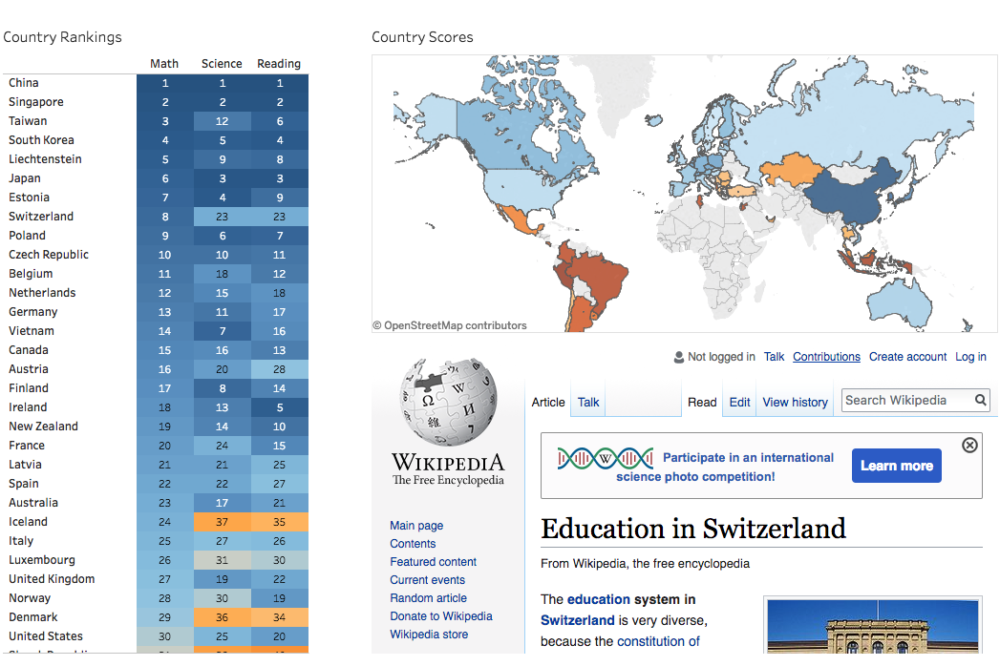
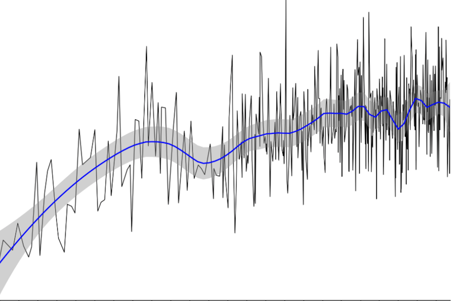

Courtney Ferguson Lee
Data Scientist
I’m a data scientist who loves using statistics and computer science to answer questions. I recently developed a machine learning model that detects fraud based on email and financial records. I’d love to combine my passion for teaching and learning with my data analysis skills to help organizations serve the needs of their clients more efficiently.
Featured Work
Iceberg Image Classifier
2012 PISA Dataset
UFC Fight Predictor
Uber Exploratory Analysis

Enron Fraud Detection

OpenStreetmap Cleaning